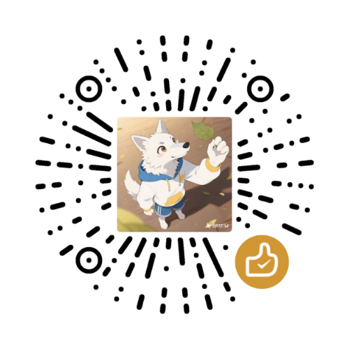

给群聊一个
可以放心说话的地方
白名单外的人私聊机器人即自动进入匿名模式，倾诉内容以随机昵称重新拼装成一条新消息转述到群聊。 不是转发聊天记录——群成员只看得到一个水果昵称。
转发聊天记录，等于没有匿名
群里有树洞、吐槽、心理疏导需求时，最省事的做法是「转发消息」，但转发会把头像、昵称、QQ 号一起带过去。
转发 = 信息全暴露
转发聊天记录会连同发送者昵称、头像、时间戳一起呈现，任何人点开都能定位到真人。想要匿名，必须丢弃原始消息。
树洞 = 重新拼装一条新消息
插件由机器人以自身身份新建一条消息发出，格式为「匿名昵称 + 内容」，不携带任何原作者字段。群里看到的只有 【番茄】：……
匿名昵称按群独立分配，同一个群内不重复抽取并长期绑定。同一个人在不同群会拿到不同昵称（A 群叫「番茄」、B 群叫「葡萄」）， 两个群的内容无法关联到同一个人；同一个群内昵称保持固定，便于群内形成连续的对话感。但昵称与真实身份之间没有任何对外可见的关联。
从一句话到群里的一条匿名消息
全程无需倾诉者记住任何命令，第一句话就开始转述。
识别与放行
收到私聊后先判定身份：白名单内 → 正常对话；白名单外 → 直接进入匿名模式。群聊未开启时完全不干预。
分配匿名身份
首次在某个群开启时，从昵称池抽一个该群还没人用的昵称（如「番茄」）并持久化，之后在这个群一直沿用；换一个群会另抽一个。池内昵称用尽则追加编号（如「番茄2」），不会与他人重名。
治理检查
内容先过审查词库，命中直接拦截不转述；再过和谐词库，命中替换为 ** 后照常转述。
解析目标群
用户映射规则 → 自动识别所在群 → 统一兜底，逐级尝试。然后按模板拼装新消息发送到各个目标群。
转述格式可自定义。默认 【{name}】：{content}，支持 {name} 昵称、{content} 内容、{time} 时间三个占位符。
长文按 max_msg_len 自动分段，每段都套用模板；图片同样支持转述（allow_image_relay 可关闭、max_images 限数，默认最多 4 张）。
功能一览
点开任意卡片查看详细说明。
匿名转述
私聊自动匿名
白名单外的人私聊机器人直接进入匿名模式，第一句话就开始转述，无需记任何命令。
- 由
auto_anon_private控制（默认开启） - 自动开启的那一条消息本身不转述，只回执告知已分配昵称与目标群
- 关闭后回到「只有发送关键词才开启」的行为
- 白名单用户不受影响，可正常与机器人对话
白名单自由聊天
白名单内的人是普通用户，与机器人正常对话（LLM 正常回复）；想匿名时发送「开启匿名模式」即可。
private_whitelist填写用户 ID，逗号分隔- 支持
平台:ID精确匹配，如qq:2226175932 - 白名单用户在匿名模式中仍会被转述，关闭后恢复自由聊天
- 来自其他平台的同名 ID 不会误命中
群聊模式
群内直接发送「开启匿名模式」，之后该群消息会被转述；默认转述回本群，也可映射到别的群。
enable_group_mode控制是否允许，关闭后群聊完全不干预- 开启成功的提示优先以私聊悄悄话发送，避免在群里暴露身份
- 用
group_target_rules指定源群:目标群 - 目标留空表示转述回来源群本身
沉默拦截
未开启匿名模式的私聊默认被静默拦截，不回复也不触发 LLM；群聊未开启时完全不干预。
silent_when_off默认true- 设为
false时放行给其他处理器或 LLM，适合与别的插件共存 - 拦截同时会阻止默认 LLM 回复，避免「匿名内容被大模型看到」
随机昵称池
从水果昵称池随机抽取并长期绑定，每个群各自一套；池为空时回退为「匿名者-001」编号。
- 同一个群内昵称不重复，两个人不会拿到同一个昵称；池子用尽后追加编号（如「番茄2」）而不是重名
- 同一个人在不同群会拿到不同昵称，两个群的内容无法关联到同一个人
- 同一个群内昵称长期固定，跨会话、跨重启保持不变
- 昵称池可用 txt 文件批量导入（设置页或聊天中发文件）
- 昵称池为空时回退编号昵称（如「匿名者-001」），前缀由
anon_name_prefix指定
格式模板
默认 【{name}】：{content}，支持 {name} {content} {time} 占位符。
- 留空
relay_format则使用旧版多行格式 - 旧格式由
relay_prefix/relay_suffix/show_time组合 - 超长文本按
max_msg_len（默认 500 字）分段，每段都套用模板 - 模板漏写
{content}时不会丢内容，自动补在末尾 - 占位符拼写错误不会导致崩溃，按原样输出
转述目标
用户映射规则
user_target_rules 精确指定某人的倾诉去向，优先级最高。
- 格式：
用户ID:群A,群B;用户ID2:群C - 分号分隔多个用户，逗号分隔多个目标群
- 也支持多个源共用一个目标：
成员A,成员B:群B号 - 用户 ID 支持
平台:ID写法 - 命中后不再尝试自动识别与统一目标
自动识别所在群
私聊时查出倾诉者在哪些候选群里，A 群的人转到 A 群；同时在 A、B 群则两处都转。
auto_detect_groups默认开启detect_group_ids限定候选群；留空表示机器人所在的全部群- 依赖 OneBot/QQ（aiocqhttp）的群成员查询能力
- 其他平台查不到时自动回退到统一目标，不报错
群聊映射规则
group_target_rules 决定群内开启匿名模式后转述到哪。
- 格式：
源群号:目标群1,目标群2;源群号2: - 支持分号或换行分隔多条规则
- 目标留空 = 转述回来源群本身
- 目标群重复填写会自动去重，不会重复转述
- 未配置规则的群走统一兜底目标
统一兜底
以上规则都没命中时，落到 target_group_ids（多群逗号分隔）。
- 解析顺序：用户映射 → 自动识别 → 统一目标
- 三项都为空时机器人会回执提示「未配置任何目标群」
- 可从任意平台发送，插件通过 AstrBot 统一消息通道投递
治理与安全
内容审查
命中 review_words 直接拦截不转述，并告知倾诉者；每条消息独立判断，且只匹配文字。
- 审查 = 拦截不发送；和谐 = 替换后照常发送
- 被和谐的文本会再判一次审查：同一个词既在和谐库又在审查库时，会直接拦截而不是替换成
**后照常发出 - 命中总是提示，不像旧版会静默丢弃
- 新一轮正常倾诉不会被上一轮审查结果影响
- 开关
review_enabled默认开启，词库默认留空，填了才生效 - 图片无法做内容审查，违规图片会被原样转发；担心可关闭
allow_image_relay
脏话自动和谐
命中 bad_words 自动替换为 censor_mask（默认 **）后照常转述。
- 内置常见脏话列表，可自行增删
- 例：「我操你妈」→「我**」
- 替换符号可改，甚至可换成 emoji
- 与审查互不干扰，可同时开启
身份管控
管理员可「禁言 昵称 分钟」「永久禁用 昵称」，按该群显示的匿名昵称生效（同一群内唯一），重启不丢。
禁言 番茄 60禁言一小时，期间其消息不转述永久禁用 草莓立即生效，并按该用户名下全部匿名身份拦住，换群拿新昵称也无法绕过解禁/解除禁用恢复使用- 昵称在同一个群内唯一，命令按该群显示的昵称执行
- 管理名单永久保存，重启不丢
词库 txt 批量导入
和谐/审查/昵称三个词库都能在设置页上传，或管理员在聊天中直接发 txt。
- 优先级：聊天上传 > 设置页文件 > 面板文本
- 支持 UTF-8（含 BOM）与 GBK/GB18030
- 每行一个词，
#开头为注释 - 单文件 ≤ 2MB、单次 ≤ 10000 个词
状态持久化
会话与名单存在插件 KV 存储中，重启不丢。
- 只保存「用户标识（群聊含群号）→ 匿名昵称 + 时间」的映射
- 不保存聊天内容
- 可选会话空闲超时
session_timeout_min - 在 WebUI 插件→数据管理 中可清空重置
多平台
QQ / Telegram / 微信 / 飞书 / Discord 等，通过 AstrBot 统一消息通道发送。
- 核心逻辑与平台无关，使用通用发送 API
- 自动识别所在群仅 OneBot/QQ 支持，其他平台回退统一目标
- 群号格式按平台填写：Telegram 为负数 chat id
- 已在
metadata.yaml中声明支持平台
实际对话长什么样
左侧是私聊，右侧是群里的结果。
📮 本次将转述到：816111082
群里只有昵称与内容，没有头像、没有 QQ 号、没有原作者字段。同一个群内，一个昵称始终对应同一个人；但同一个人在不同群是不同昵称，跨群无法关联，也无法反查是谁。
匿名是「对群成员匿名」，不是「对管理员匿名」。管理员仍可通过 AstrBot 日志查看原始消息—— 这是刻意设计，用于处置违规内容。建议在群规中向成员说明这一点。
配置面板
WebUI → 插件管理 → 「匿名树洞」→ 配置。表单由 _conf_schema.json 自动生成，共 34 项。
最关键的三项
| 配置键 | 默认 | 说明 |
|---|---|---|
target_group_ids必填 | （空） | 统一转述目标群，多群用英文逗号分隔。所有映射规则都没命中时用它 |
private_whitelist | （空） | 私聊白名单：这些人可与机器人正常对话，不受匿名拦截 |
auto_detect_groups | true | 私聊时自动识别倾诉者所在群（OneBot 支持），实现「A 群的人转到 A 群」 |
会话与权限
| 配置键 | 默认 | 说明 |
|---|---|---|
enabled | true | 总开关，关闭后插件完全不响应 |
start_keywords | 开启匿名模式 | 开启会话的关键词，多个用英文逗号分隔 |
stop_keywords | 关闭匿名模式,结束倾诉 | 关闭会话的关键词 |
auto_anon_private | true | 白名单外私聊自动开启匿名模式 |
silent_when_off | true | 私聊未开启时保持沉默；设为 false 则放行给其他处理器/LLM |
enable_group_mode | true | 允许群聊内开启匿名模式 |
session_timeout_min | 0 | 会话空闲超时（分钟），0 为不超时 |
ack_on_relay | true | 转述成功回执；群聊会话优先发私聊悄悄话 |
notify_group_on_start | false | 有人开启匿名模式时在目标群内播报一条提示 |
转述格式
| 配置键 | 默认 | 说明 |
|---|---|---|
relay_format | 【{name}】：{content} | 转述格式模板，占位符 {name} {content} {time}；留空用旧格式，漏写 {content} 时内容自动补在末尾 |
nicknames | 水果昵称池 | 随机昵称池；同一个群内不重复（用尽后追加编号），留空则用编号兜底 |
nicknames_file | （空） | 昵称池 txt 文件（设置页上传） |
anon_name_prefix | 匿名者 | 编号兜底昵称前缀 |
show_time | true | 提供 {time} 占位符 / 旧格式附带时间。多群转述时建议关闭：同一秒的时间戳会让两个群的内容相互可关联 |
max_msg_len | 500 | 单条转述最大字数，超长自动分段 |
max_images | 4 | 单条转述最多携带的图片数，超出部分不转述（回执会说明丢了几张）；0 表示不限制 |
allow_image_relay | true | 是否允许把图片转述到群；关闭后只转述文字。图片无法做内容审查，担心违规图片外泄可关闭 |
relay_prefix / relay_suffix | 【匿名倾诉】 / （空） | 仅 relay_format 留空时生效 |
转述目标映射
| 配置键 | 默认 | 说明 |
|---|---|---|
user_target_rules | （空） | 私聊用户映射（优先）：用户ID:群A,群B;用户ID2:群C；也支持多个源共用一个目标，如 成员A,成员B:群B号 |
group_target_rules | （空） | 群聊映射：源群号:目标群1,目标群2;源群号2:（分号或换行分隔，重复目标自动去重） |
detect_group_ids | （空） | 自动识别的候选群；留空 = 机器人所在的全部群 |
内容治理
| 配置键 | 默认 | 说明 |
|---|---|---|
review_enabled | true | 内容审查开关：命中直接拦截不转述 |
review_words / review_words_file | （空） | 审查词库（文本 / txt 文件） |
censor_enabled | true | 脏话自动和谐开关 |
bad_words / bad_words_file | 内置脏话列表 | 和谐词库（文本 / txt 文件） |
censor_mask | ** | 和谐替换符号 |
admin_commands_enabled | true | 启用管理命令 |
mute_default_min | 30 | 「禁言 昵称」不带时长时的默认分钟数 |
管理员命令
| 命令 | 效果 |
|---|---|
禁言 昵称 [分钟] | 禁言该匿名身份，省略时长用默认 mute_default_min |
解禁 昵称 | 解除禁言 |
永久禁用 昵称 | 按该用户名下全部匿名身份禁用并立即生效，无法再开启匿名模式（换群拿新昵称也绕不过） |
解除禁用 昵称 | 恢复匿名模式使用权限 |
上传和谐词库 / 上传审查词库 / 上传昵称池 | 附带 txt 文件批量导入词库 |
重置词库 | 清除聊天上传的词库，回退到设置页文件/面板配置 |
重置和谐词库 / 重置审查词库 / 重置昵称池 | 单独重置某一类词库 |
词库优先级：聊天上传 > 设置页上传文件 > 配置面板文本。上一级缺失时自动回退到下一级，不会因为漏配某一项而失效。
词库文件支持 UTF-8（含 BOM）与 GBK 编码，每行一个词，# 开头为注释行。
三分钟装好
不需要安装任何第三方依赖，下载即用。
方式一 · 下载 zip 上传 推荐
下载最新安装包，在 WebUI 插件管理里上传，重载插件，填好目标群号即可。
- 下载 astrbot_plugin_anon_shudong.zip
- WebUI → 插件管理 → 安装插件 → 上传该 zip
- 在插件管理中重载插件
- 进入配置面板填「目标群号」，保存后再次重载
astrbot_plugin_anon_shudong.zip，AstrBot 以文件名作为插件目录名。方式二 · 从 GitHub 仓库安装
在插件管理里选择「从 GitHub 仓库安装」，填入仓库地址。要求服务器能访问 GitHub。
- WebUI → 插件管理 → 安装插件 → 从 GitHub 仓库安装
- 填入
https://github.com/yuntaojinghong/astrbot_plugin_anon_shudong - 这种方式便于后续一键更新
方式三 · 手动复制文件夹
把整个插件目录放进 AstrBot 的 plugins 目录，然后在 WebUI 里重载插件。
- 桌面版：
C:\Users\<用户名>\.astrbot\data\plugins\ - 源码/systemd：
<AstrBot根目录>/data/plugins/ - Docker：容器内
/AstrBot/data/plugins/（或挂载卷） - 放入后在 WebUI「插件管理」中重载
环境要求：AstrBot >= 4.16, < 5，Python 3.10+，无第三方依赖。
安装后第一次一定要进配置面板填 target_group_ids，否则转述没有目标群。
数据与隐私
插件保存什么、不保存什么，以及匿名的边界在哪。
只保存最小状态
会话状态（用户平台标识、群号 → 匿名昵称、时间）与管理名单，存放在 AstrBot 的插件 KV 存储中，重启不丢。
不保存聊天内容
插件自身不落盘任何倾诉内容，转述完成后内存中不保留副本。日志由 AstrBot 统一管理，请自行评估其保留策略。
群内不出现身份字段
群内只出现匿名昵称与内容，没有头像、昵称、QQ 号。发送的是重新拼装的新消息，不携带原作者元数据；昵称按群独立分配，同一个人在不同群对不上，跨群无法关联。
管理员可见原始消息
这是刻意设计：管理员仍可通过 AstrBot 日志查看原始消息，用于处置违规内容。建议在群规中向成员明确说明。
常见问题
私聊发消息没有反应？
默认设计如此（silent_when_off = true）。若想放行给 LLM，把 silent_when_off 设为 false；
若是白名单用户却仍被拦截，检查 private_whitelist 是否填了正确的用户 ID（必要时用 平台:ID 格式）。
群号填什么格式？
QQ / OneBot 填群号数字即可；Telegram 填群聊 chat id（可能为负数）；多群用英文逗号分隔，如 123456789,987654321。
语音、表情、视频能转述吗？
不能，仅支持文字和图片。遇到这类消息机器人会提示一次，同一会话内不再重复提示。
图片会被审查吗？
不会。内容审查（review_words）只匹配文字，图片会被原样转发，无法做内容识别。如果担心违规图片外泄，
把 allow_image_relay 设为 false 即可只转述文字；单条消息的图片数量默认最多 4 张
（max_images，0 为不限制），超出部分不转述并在回执中说明丢了几张。
转述失败怎么排查？
依次检查：目标群号是否正确、机器人是否在该群里、插件是否已重载、AstrBot 日志中是否有
转述到群 ... 失败 或 未找到平台 ... 报错。
自动识别所在群不生效？
该功能依赖 OneBot/QQ（aiocqhttp）适配器的群成员查询能力，其他平台会自动回退到统一目标
target_group_ids，不会报错。若想缩小查询范围，用 detect_group_ids 限定候选群。
两个人会拿到同一个匿名昵称吗？
同一个群内不会：两个人不会拿到同一个昵称；池子用尽后会追加编号（如「番茄2」）而不是重名， 否则管理员「禁言 番茄」一次就会误伤多人。同一个人在不同群则会拿到不同昵称，两个群的内容无法关联到同一个人。
匿名昵称想重置怎么办？
昵称按群持久化：同一个群内多次开启保持不变，换群则另抽一个，因此管理命令请以该群显示的昵称为准
（如 禁言 番茄 10）。如需重置，删除插件存储数据即可（WebUI 插件管理 → 数据管理）。
旧版本 AstrBot 能用吗？
本插件基于 AstrBot v4 Star API（>= 4.16, < 5），v3 及早期 v4 不支持。
插件图标显示为默认占位图？
确认插件根目录存在 logo.png（256×256，1:1）。从 v1.9.0 起安装包已内置该文件，
更新插件后刷新 Dashboard 即可看到。
怎么确认代码没被改坏？
仓库自带 115 项离线回归测试，用桩模块模拟 AstrBot API，无需安装 AstrBot：
python -X utf8 tests/test_logic.py。CI 在 Python 3.10–3.13 上全部跑一遍。
如果它帮到了你
点个 Star 不花一分钱，请我喝杯咖啡是更暖的心意 —— 两种都真心感谢。
请我喝杯咖啡
微信扫一扫，金额随意，纯粹心意。

云涛惊鸿 的赞赏码